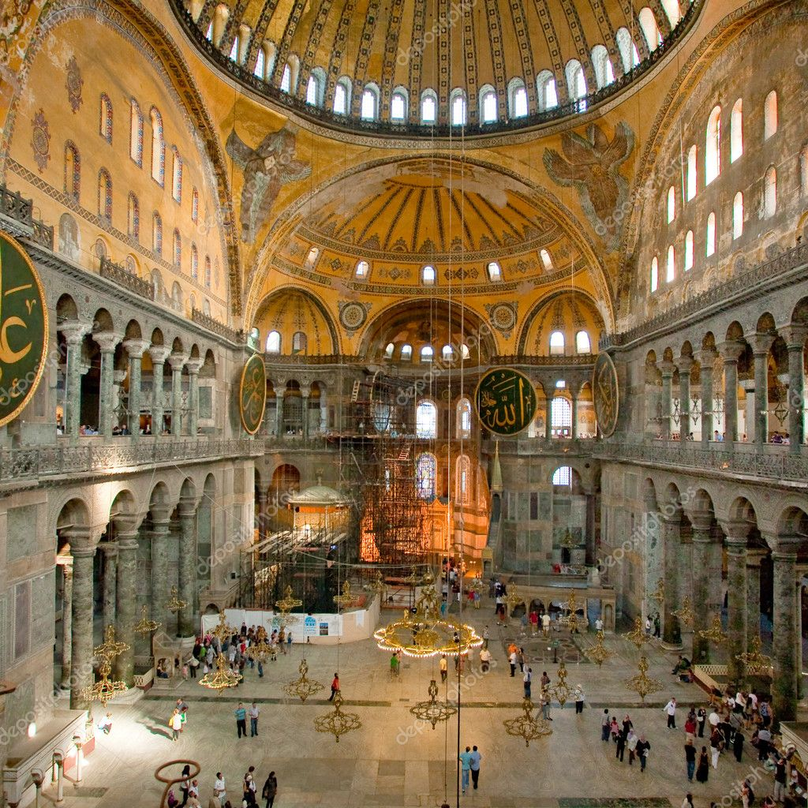
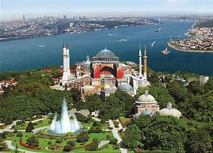

History
Hagia Sophia is one of the most significant monuments in world history and a symbol of Istanbul’s layered identity. Constructed in 537 AD during the reign of Byzantine Emperor Justinian I, it was originally built as a Christian cathedral and remained so for nearly a thousand years.
After the Ottoman conquest of Constantinople in 1453, Hagia Sophia was converted into a mosque. In 1935, it became a museum as part of Turkey’s modernization efforts, before being reconverted into a mosque in 2020. Its massive dome, detailed mosaics, and blend of Byzantine and Islamic architecture make it a unique masterpiece.
Photo Gallery


